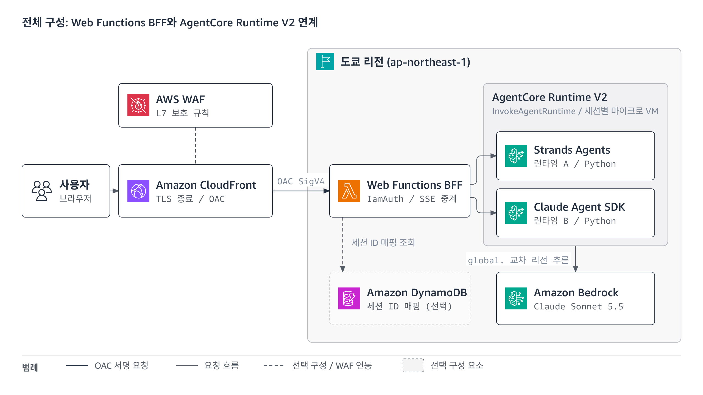
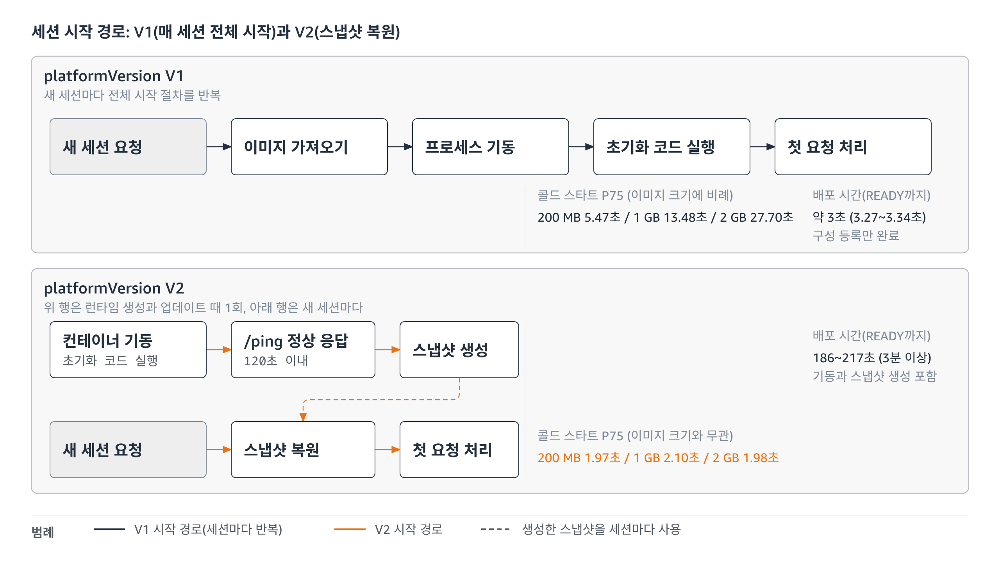
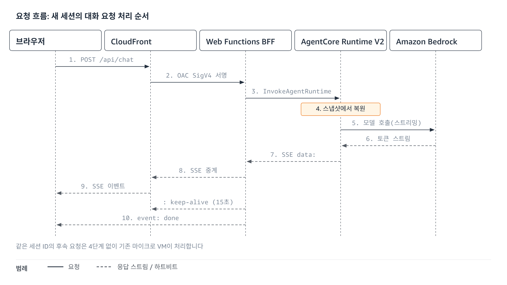
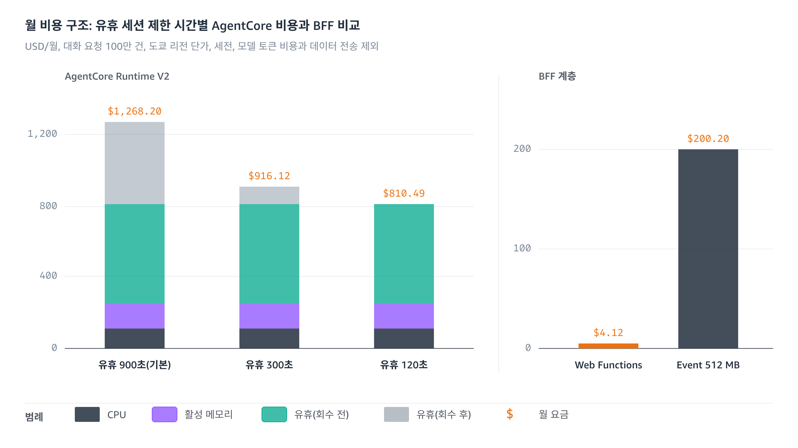

에이전트를 웹 서비스로 공개할 때 브라우저와 AgentCore Runtime V2 사이의 BFF를 어떻게 구성할지 다룹니다. BFF는 요청 시간 대부분을 에이전트 응답을 기다리며 보내므로 CPU를 실제로 연산한 시간만 과금하는 Web Functions가 잘 맞습니다. 시나리오에서 BFF는 월 4.12 USD로 Event Functions보다 약 49배 저렴했고 비용에서는 유휴 세션 제한 시간과 모델 토큰이 가장 큰 변수였습니다.This post covers how to build the BFF between the browser and AgentCore Runtime V2 when you expose an agent as a web service. A BFF spends most of each request waiting for the agent's response, so Web Functions, which bills CPU only for the time it actually spends computing, is a good fit. In the scenario, the BFF cost 4.12 USD a month, about 49 times less than Event Functions, and the idle session timeout and model tokens were the biggest cost variables.
AI 에이전트를 웹 서비스로 공개하려면 브라우저와 에이전트 런타임 사이에 한 계층이 더 필요합니다. 브라우저에는 AWS 자격 증명을 둘 수 없고 사용자 대화를 런타임 세션과 이어 주며 에이전트의 토큰 스트림을 끊김 없이 전달할 곳도 있어야 합니다. 이 계층을 BFF(Backend for Frontend, 프런트엔드 전용 백엔드)라고 부릅니다.
1부에서는 AWS Lambda Web Functions를 소개했습니다. Web Functions는 표준 HTTP 서버를 그대로 배포하고 실행 환경 하나가 최대 128개 요청을 동시에 처리하며 CPU는 실제로 연산한 시간만 과금합니다. 1부의 비용 비교에서는 처리 시간이 활성 CPU의 약 5~6배를 넘으면 512 MB Event Functions보다 Web Functions가 저렴해진다는 기준을 얻었습니다.
2부에서는 Web Functions로 BFF를 만들고 Amazon Bedrock AgentCore Runtime V2에 배포한 에이전트를 호출합니다(AgentCore Runtime V2는 2026년 10월 26일 기준 서울 리전 미지원). 에이전트는 Strands Agents와 Claude Agent SDK 두 가지로 만들어 비교합니다. 모든 구성은 아시아 태평양(도쿄) 리전 기준이며 모델은 Claude Sonnet 5.5를 글로벌 교차 리전 추론(Global cross-Region inference)으로 호출합니다.
01
AgentCore Runtime의 InvokeAgentRuntime API는 기본적으로 IAM(SigV4) 서명을 요구합니다. 브라우저가 직접 호출하려면 자격 증명과 런타임 ARN을 클라이언트에 두어야 하므로 서비스 내부 구조가 그대로 노출됩니다. 세션 관리도 서버가 맡는 것이 안전합니다. runtimeSessionId는 33자 이상이어야 하고 같은 ID로 들어온 요청은 같은 세션의 마이크로 VM(MicroVM)으로 전달됩니다. 사용자 대화 하나를 세션 하나에 안정적으로 연결하는 일은 BFF의 몫입니다.
입력 검증도 BFF에서 한 번 더 합니다. 에이전트는 요청 본문을 파싱된 JSON으로 받으므로 prompt가 문자열이 아닐 수 있습니다. AgentCore 개발자 가이드는 문자열이 아닌 입력이 프레임워크에 그대로 전달되면 모델과 가드레일을 거치지 않고 도구가 실행될 수 있다고 경고합니다. BFF가 먼저 걸러 내면 잘못된 요청이 런타임 세션을 만들기 전에 차단됩니다.
| 계층 | 담당 역할 |
|---|---|
| Amazon CloudFront | 사용자 지정 도메인, TLS 종료, AWS WAF, 정적 자산 캐시, OAC 서명 |
| Web Functions BFF | 사용자 인증 결과 확인, 입력 검증, 대화와 runtimeSessionId 매핑, 런타임 선택, SSE 중계와 하트비트, 완료 이벤트, 재시도(AWS SDK 기본 재시도) |
| AgentCore Runtime V2 | 세션별 마이크로 VM 격리, 에이전트 루프 실행, 모델과 도구 호출, 응답 스트리밍 |
| Amazon Bedrock | 모델 추론(Claude Sonnet 5.5, 글로벌 교차 리전 추론 프로파일) |
표 1. 구성 요소별 역할 분담
Web Functions는 이런 BFF에 잘 맞습니다. BFF는 요청 시간 대부분을 에이전트 응답을 기다리며 보냅니다. 도쿄 리전 시험에서 BFF가 요청 하나에 사용한 활성 CPU는 30~51 ms였습니다. 응답이 10초 동안 스트리밍되어도 CPU가 일하는 시간은 그 200분의 1 수준이므로 1부의 손익분기 기준을 크게 넘습니다. 스트림 수십 개가 실행 환경 하나를 함께 사용하고 기다리는 시간은 CPU 요금에 거의 반영되지 않습니다.
02
Web Functions와 AgentCore Runtime V2는 2026년 10월 26일 기준 미국 동부(버지니아 북부), 미국 동부(오하이오), 미국 서부(오레곤), 유럽(아일랜드), 아시아 태평양(도쿄)에서 제공됩니다. AgentCore Runtime V2는 서울 리전을 지원하지 않으므로(V1은 서울에서 사용할 수 있습니다) 두 서비스를 함께 사용하는 이 구성에서는 도쿄가 국내 사용자와 가장 가까운 리전입니다.

요청은 네 구간을 거쳐 흐릅니다. 사용자는 CloudFront 배포의 사용자 지정 도메인으로 접속하고 CloudFront는 오리진 액세스 제어(OAC)로 서명한 요청을 IamAuth 엔드포인트로 보냅니다. BFF는 실행 역할 권한으로 InvokeAgentRuntime을 호출하고 런타임은 자신의 실행 역할로 Bedrock 모델을 호출합니다. 클라이언트 어디에도 AWS 자격 증명이나 런타임 ARN이 노출되지 않습니다.
스트리밍 응답은 경로의 어느 한 구간이라도 시간 제한이 짧으면 중간에 끊깁니다. 구간별 제한은 표 2와 같습니다.
| 구간 | 설정 | 범위와 기본값 | 이 구성의 설정 |
|---|---|---|---|
| CloudFront | 응답 제한 시간(Response timeout) | 1~120초(기본 할당량), 기본 30초 | 기본값 유지, BFF가 15초마다 하트비트 전송 |
| CloudFront | 응답 완료 제한 시간(Response completion timeout) | 응답 제한 시간 이상(최댓값은 문서에 없음), 기본 미적용 | 900초 이상 또는 미적용 |
| Web Functions | timeoutSeconds(Revision) | 3~900초, 기본 30초 | 900초 |
| AgentCore Runtime | 동기 요청 제한 시간 | 15분(조정 불가) | 해당 없음 |
| AgentCore Runtime | 응답 스트리밍 최대 시간 | 60분(조정 불가) | 해당 없음 |
| AgentCore Runtime | 유휴 세션 제한 시간(idleRuntimeSessionTimeout) | 기본 15분(조정 가능) | 비용 구조에서 검토 |
표 2. 구간별 시간 제한 (CloudFront Developer Guide, Lambda Developer Guide, AgentCore Developer Guide Quotas 기준, 2026년 10월 24일 확인)
놓치기 쉬운 부분은 세 가지입니다. 첫째, Web Functions의 timeoutSeconds 기본값은 30초입니다. 에이전트가 도구를 여러 번 호출하면 30초를 쉽게 넘기므로 BFF는 최대값인 900초로 배포합니다. 그러면 BFF의 상한이 AgentCore Runtime의 동기 요청 제한 시간과 같은 15분이 됩니다.
둘째, CloudFront의 응답 제한 시간(기본 30초)은 첫 응답뿐 아니라 응답 데이터 사이의 간격에도 적용됩니다. 시험에서 35초 동안 데이터가 오지 않은 스트림은 30초에 끊겼습니다. BFF가 15초마다 SSE 주석 줄(: keep-alive)을 보내면 해결됩니다.
셋째, 시간 제한에 걸린 스트림은 오류 없이 닫힐 수 있습니다. 시험에서 Web Functions의 timeoutSeconds나 CloudFront의 응답 완료 제한 시간에 도달한 스트림은 정상 종료처럼 끝났습니다. BFF가 마지막에 event: done 같은 완료 이벤트를 보내면 클라이언트가 정상 완료와 중단을 구분할 수 있습니다.
03
2026년 9월 18일 출시된 AgentCore Runtime V2는 런타임을 만들 때 platformVersion을 V2로 지정해 사용합니다. 이 값을 생략하면 V1이 적용됩니다.
V2의 핵심은 스냅샷 기반 시작입니다. 런타임을 만들거나 업데이트하면 AgentCore가 컨테이너를 한 번 실행해 스냅샷을 만들고 새 세션은 이 스냅샷에서 복원됩니다. AgentCore Runtime V2 발표에 따르면 200 MB부터 2 GB까지의 이미지에서 콜드 스타트(P75)가 1.9~2.0초로 일정했고 V1은 5.4~30초였습니다. 메모리는 필요한 만큼만 늘고 사용하지 않는 메모리는 세션 중에 회수됩니다. 대신 생성과 업데이트에는 수 분이 걸리며 시험에서는 런타임이 READY 상태가 되기까지 약 3분(192~193초)이 걸렸습니다. 그림 2는 두 버전의 세션 시작 경로를 비교한 것입니다.

| 항목 | 값 |
|---|---|
| 세션당 하드웨어 상한 | 2 vCPU, 8 GB(조정 불가) |
| 컨테이너 요구 사항 | ARM64, 0.0.0.0:8080, POST /invocations, GET /ping |
| 상태 확인 제한 시간(V2) | 시작 후 120초 |
| 활성 세션 할당량 | 버지니아 북부, 오레곤 5,000개, 그 외 리전 2,500개(조정 가능) |
| 새 세션 생성 속도 | 계정당 25 TPS(조정 가능) |
표 3. AgentCore Runtime V2 주요 사양과 할당량 (AgentCore Developer Guide 기준. 도쿄 리전 할당량은 Service Quotas 기본값으로 확인, 2026년 10월 24일)
스냅샷 복원은 코드 작성 방식에도 영향을 줍니다. 시작 시점에 실행한 코드의 결과는 스냅샷에 담겨 모든 세션이 공유합니다. 그래서 라이브러리 임포트(Import)나 AWS SDK 클라이언트 생성처럼 무겁고 재사용되는 작업은 시작 시점에 둡니다. 난수, 요청 ID, 현재 시각, 만료되는 자격 증명은 요청을 처리하는 함수 안에서 만듭니다. 시작 시점에 만든 난수는 복원된 모든 세션이 같은 값을 갖기 때문입니다.
04
Strands Agents는 AgentCore Python SDK의 BedrockAgentCoreApp과 함께 사용하면 이벤트를 yield로 내보내는 것만으로 스트리밍 응답이 됩니다. 에이전트와 모델 객체는 모듈 범위에서 만들어 스냅샷에 담고 입력 검증과 스트리밍은 진입점 함수에서 처리합니다.
# agent_strands.py
from bedrock_agentcore import BedrockAgentCoreApp
from strands import Agent
from strands.models import BedrockModel
# 시작 시점: 모델과 에이전트를 한 번 만들어 스냅샷에 담습니다.
model = BedrockModel(
model_id="global.anthropic.claude-sonnet-5-5", # 글로벌 교차 리전 추론 프로파일
region_name="ap-northeast-1",
)
agent = Agent(model=model, system_prompt="당신은 AWS 아키텍처 질문에 답하는 어시스턴트입니다.")
app = BedrockAgentCoreApp()
@app.entrypoint
async def invoke(payload):
prompt = payload.get("prompt")
# prompt가 문자열이 아니면 모델과 가드레일을 거치지 않고 도구가 실행될 수 있으므로 거절합니다.
if not isinstance(prompt, str) or not prompt.strip():
yield {"error": "prompt must be a non-empty string"}
return
async for event in agent.stream_async(prompt):
if "data" in event: # 텍스트 조각만 내보내 BFF와 브라우저의 처리를 단순하게 유지합니다.
yield {"type": "text", "text": event["data"]}
if __name__ == "__main__":
app.run()stream_async는 텍스트 외에 도구 호출 이벤트도 내보내지만 예제는 텍스트 조각만 골라 보냅니다. 브라우저는 text 이벤트만 이어 붙이면 됩니다. 시험에서는 조각이 약 30 ms 간격으로 도착했습니다.
Claude Agent SDK는 Claude Code의 에이전트 루프와 파일 읽기와 쓰기, 명령 실행 같은 기본 도구를 라이브러리로 제공합니다. Strands Agents와 가장 큰 차이는 실행 구조입니다. SDK는 query()를 호출할 때마다 claude CLI 하위 프로세스를 띄우고 이 프로세스가 작업 디렉터리와 세션 기록 파일을 다룹니다. AgentCore Runtime은 세션마다 파일 시스템이 분리된 마이크로 VM을 배정하므로 작업 디렉터리를 하나로 고정해도 사용자 사이에 파일이 섞이지 않습니다.
에이전트 코드의 구조는 Strands 예제와 같고 query()에 ClaudeAgentOptions를 넘기는 부분만 다릅니다. SDK가 Bedrock을 사용하도록 CLAUDE_CODE_USE_BEDROCK=1 환경 변수를 지정하고 모델은 global.anthropic.claude-sonnet-5-5로 지정합니다. 설정 요점은 세 가지입니다.
첫째, allowed_tools는 나열한 도구를 승인 없이 실행하게 할 뿐 다른 도구를 막지 않습니다. allowed_tools만 지정한 시험에서는 모델이 Bash 도구를 호출하려다 승인 대기로 막혀 한 턴을 소비했습니다. 모델에 노출할 도구는 tools로 정하고 permission_mode="dontAsk"로 나머지 호출을 거부합니다.
둘째, SDK에는 전체 제한 시간이 없으므로 max_turns로 턴 수에 상한을 둡니다. 상한에 도달하면 SDK 버전에 따라 error_max_turns 결과 메시지로 끝나거나 예외가 발생하므로 응답 루프를 try로 감쌉니다.
셋째, Claude Code는 사용할 수 있는 모델을 확인하려고 다른 모델도 짧게 호출합니다. Sonnet 5.5만 허용한 실행 역할에서는 이 호출이 AccessDenied로 거부되었지만 응답에는 영향이 없었습니다. 의도하지 않은 모델로 처리가 넘어가지 않도록 실행 역할의 모델 호출 권한을 *로 열지 않는 것을 권고합니다.
| 항목 | Strands Agents | Claude Agent SDK |
|---|---|---|
| 실행 구조 | Python 프로세스 안에서 에이전트 루프 실행 | 요청마다 claude CLI 하위 프로세스 실행 |
| 기본 제공 도구 | 직접 정의하거나 MCP로 연결 | 파일 읽기와 쓰기, 편집, 명령 실행 등 Claude Code 도구 |
| 적합한 용도 | 업무 API를 도구로 묶는 질의응답, 워크플로 에이전트 | 파일과 명령을 다루는 코딩, 문서 작업형 에이전트 |
| 시험: 이미지 크기 | 239 MB(ECR 압축 85 MB) | 515 MB(ECR 압축 214 MB) |
| 시험: V2 콜드 스타트(P75) | 1.99초 | 1.91초 |
| 시험: 첫 토큰까지 시간 (P50, 새 세션 / 기존 세션) | 2.35초 / 0.82초 | 5.90초 / 2.16초 |
표 4. Strands Agents와 Claude Agent SDK 비교 (시험은 2026년 10월 24일 도쿄 리전, Claude Sonnet 5.5 글로벌 교차 리전 추론, 조건별 10회. 콜드 스타트는 BFF에서 측정한 새 세션의 응답 시작 시간, 첫 토큰은 서울 리전 클라이언트가 CloudFront를 거쳐 측정한 P50 값)
사내 시스템을 도구로 엮어 질문에 답하는 에이전트에는 Strands Agents가 가볍고 파일을 만들고 고치며 여러 단계를 스스로 계획하는 에이전트에는 Claude Agent SDK가 유리합니다. 두 이미지의 크기는 두 배 넘게 차이 났지만 콜드 스타트는 약 2초로 비슷했습니다. V2의 스냅샷 복원 덕분입니다. 첫 토큰까지의 약 3.5초 차이는 claude 하위 프로세스를 띄우고 긴 시스템 프롬프트로 첫 요청을 보내는 실행 구조에서 생기는 것으로 보입니다.
두 에이전트는 ARM64 컨테이너 이미지로 만들어 Amazon ECR에 올린 뒤 V2 런타임으로 생성합니다. Dockerfile은 공식 Python 이미지에 bedrock-agentcore와 프레임워크 패키지(strands-agents 또는 claude-agent-sdk)를 설치하는 정도면 충분합니다. 2026년 10월 24일 기준 AgentCore CLI 문서에는 V2 지정 방법이 없으므로 AWS CLI로 런타임을 만들고 --platform-version V2를 붙입니다. 런타임 이름에는 하이픈을 사용할 수 없으므로 밑줄을 사용합니다.
aws bedrock-agentcore-control create-agent-runtime \
--region ap-northeast-1 \
--agent-runtime-name "strands_agent" \
--role-arn "arn:aws:iam::111122223333:role/AgentRuntimeRole" \
--agent-runtime-artifact '{"containerConfiguration": {"containerUri": "111122223333.dkr.ecr.ap-northeast-1.amazonaws.com/strands-agent:latest"}}' \
--network-configuration '{"networkMode": "PUBLIC"}' \
--platform-version V2
# 상태가 READY가 될 때까지 확인(V2는 스냅샷 생성 때문에 수 분이 걸립니다)
aws bedrock-agentcore-control get-agent-runtime \
--region ap-northeast-1 --agent-runtime-id <agent-runtime-id> \
--query '[status, platformVersion]'런타임 실행 역할에는 ECR 이미지 가져오기와 CloudWatch Logs 권한에 더해 모델 호출 권한을 줍니다. 글로벌 교차 리전 추론은 세 가지 리소스에 모두 권한이 있어야 호출됩니다. 도쿄 리전의 글로벌 추론 프로파일, 도쿄 리전의 기반 모델, 리전이 지정되지 않은 글로벌 기반 모델입니다. 하나라도 빠지면 호출이 거부됩니다. 아래 정책은 User Guide의 예시에 스트리밍 호출 권한을 더한 것으로 도쿄 리전에서 동작을 확인했습니다. Claude Agent SDK 런타임에는 추론 프로파일 조회 권한(bedrock:ListInferenceProfiles, bedrock:GetInferenceProfile)도 더합니다. 시험에서 이 권한이 없을 때 ListInferenceProfiles 거부가 70건 기록되었습니다.
{
"Version": "2012-10-17",
"Statement": [
{
"Sid": "GrantGlobalCrisInferenceProfileRegionAccess",
"Effect": "Allow",
"Action": ["bedrock:InvokeModel", "bedrock:InvokeModelWithResponseStream"],
"Resource": "arn:aws:bedrock:ap-northeast-1:111122223333:inference-profile/global.anthropic.claude-sonnet-5-5",
"Condition": { "StringEquals": { "aws:RequestedRegion": "ap-northeast-1" } }
},
{
"Sid": "GrantGlobalCrisInferenceProfileInRegionModelAccess",
"Effect": "Allow",
"Action": ["bedrock:InvokeModel", "bedrock:InvokeModelWithResponseStream"],
"Resource": "arn:aws:bedrock:ap-northeast-1::foundation-model/anthropic.claude-sonnet-5-5",
"Condition": {
"StringEquals": {
"aws:RequestedRegion": "ap-northeast-1",
"bedrock:InferenceProfileArn": "arn:aws:bedrock:ap-northeast-1:111122223333:inference-profile/global.anthropic.claude-sonnet-5-5"
}
}
},
{
"Sid": "GrantGlobalCrisInferenceProfileGlobalModelAccess",
"Effect": "Allow",
"Action": ["bedrock:InvokeModel", "bedrock:InvokeModelWithResponseStream"],
"Resource": "arn:aws:bedrock:::foundation-model/anthropic.claude-sonnet-5-5",
"Condition": {
"StringEquals": {
"aws:RequestedRegion": "unspecified",
"bedrock:InferenceProfileArn": "arn:aws:bedrock:ap-northeast-1:111122223333:inference-profile/global.anthropic.claude-sonnet-5-5"
}
}
}
]
}05
BFF는 Node.js 기본 http 모듈과 AWS SDK for JavaScript v3만 사용합니다. 클라이언트는 모듈 범위에서 한 번 만들어 재사용하고 여러 요청이 실행 환경 하나를 함께 사용하므로 요청별 상태는 전역 변수에 두지 않습니다. 예제는 사용자 인증을 생략했으므로 그대로 공개하지 않습니다.
// index.js (Web Functions BFF)
const http = require('node:http');
const { randomUUID } = require('node:crypto');
const { BedrockAgentCoreClient, InvokeAgentRuntimeCommand } = require('@aws-sdk/client-bedrock-agentcore');
const config = require('./config.json'); // { "region": "ap-northeast-1", "runtimes": { "strands": "<ARN>", "claude": "<ARN>" } }
const client = new BedrockAgentCoreClient({ region: config.region }); // 실행 환경 단위로 재사용
const SESSION_ID = /^[A-Za-z0-9_-]{33,256}$/; // runtimeSessionId는 33자 이상이어야 합니다.
function readJson(req, limit = 64 * 1024) {
return new Promise((resolve, reject) => {
let size = 0; const chunks = [];
req.on('data', (c) => { size += c.length; if (size > limit) { reject(new Error('too large')); req.destroy(); } else chunks.push(c); });
req.on('end', () => { try { resolve(JSON.parse(Buffer.concat(chunks).toString('utf8'))); } catch (e) { reject(e); } });
req.on('error', reject);
});
}
async function handle(req, res) {
if (req.method === 'GET' && req.url === '/health') {
res.writeHead(200, { 'content-type': 'application/json' });
return res.end('{"status":"ok"}');
}
const url = new URL(req.url, 'http://localhost');
if (req.method !== 'POST' || url.pathname !== '/api/chat') return res.writeHead(404).end();
let body;
try { body = await readJson(req); } catch { return res.writeHead(400).end(); }
const agent = url.searchParams.get('agent') || 'strands';
const arn = Object.hasOwn(config.runtimes, agent) ? config.runtimes[agent] : undefined;
if (!body || typeof body !== 'object' || !arn || typeof body.prompt !== 'string' || !body.prompt.trim()) {
return res.writeHead(400).end(); // null 같은 비객체 본문도 거절합니다.
}
// 대화를 이어 갈 때는 클라이언트가 받은 세션 ID를 다시 보내고, 없으면 새로 만듭니다(UUID는 36자).
const sessionId = SESSION_ID.test(body.sessionId || '') ? body.sessionId : randomUUID();
const abort = new AbortController();
res.on('close', () => abort.abort()); // 브라우저가 연결을 끊으면 에이전트 호출도 중단합니다.
res.writeHead(200, { 'content-type': 'text/event-stream', 'cache-control': 'no-cache', 'x-agent-session-id': sessionId });
const heartbeat = setInterval(() => res.write(': keep-alive\n\n'), 15000); // CloudFront 응답 제한 시간 30초 대비
let completed = false;
try {
const out = await client.send(new InvokeAgentRuntimeCommand({
agentRuntimeArn: arn,
runtimeSessionId: sessionId,
qualifier: 'DEFAULT',
contentType: 'application/json',
accept: 'text/event-stream',
payload: JSON.stringify({ prompt: body.prompt }),
}), { abortSignal: abort.signal });
for await (const chunk of out.response) res.write(chunk); // AgentCore의 SSE를 그대로 중계합니다.
completed = true;
} catch (err) {
if (!abort.signal.aborted) res.write(`event: error\ndata: ${JSON.stringify({ code: err.name })}\n\n`);
} finally {
clearInterval(heartbeat);
if (completed) res.write('event: done\ndata: {}\n\n'); // 정상 완료를 클라이언트에 알립니다.
res.end();
}
}
// 예상하지 못한 예외는 해당 요청만 500으로 끝내 같은 실행 환경의 다른 스트림을 지킵니다.
const server = http.createServer((req, res) => handle(req, res).catch(() => {
if (!res.headersSent) res.writeHead(500);
res.end();
}));
const [host, port] = (process.env.AWS_LAMBDA_HTTP_ENDPOINT || 'localhost:3000').split(':');
server.listen(Number(port), host);
process.on('SIGTERM', () => {
server.close(() => process.exit(0));
server.closeAllConnections();
setTimeout(() => process.exit(0), 900).unref();
});코드의 요점은 네 가지입니다. 첫째, 브라우저가 연결을 끊으면 AbortController로 BFF와 AgentCore Runtime 사이의 스트림도 닫습니다. 시험에서 3초에 연결을 끊자 BFF는 3.36초에 업스트림 스트림을 닫았습니다. 세션 안의 에이전트가 응답 생성을 멈추는지는 확인하지 않았으므로, 확실히 멈춰야 한다면 StopRuntimeSession으로 세션을 끝낼 수 있습니다. 다만 그 세션으로는 대화를 이어 갈 수 없습니다. 둘째, 15초마다 보내는 하트비트는 SSE 주석 줄이라 브라우저가 무시합니다. 셋째, 마지막 event: done으로 정상 완료를 알립니다. 넷째, 오류는 이름만 내보내 런타임 ARN 같은 내부 정보가 노출되지 않게 합니다. 핸들러 밖으로 나온 예외는 해당 요청만 500으로 끝내므로 잘못된 요청 하나가 프로세스를 종료시켜 같은 실행 환경의 다른 스트림까지 끊는 일을 막습니다.
BFF 실행 역할에는 bedrock-agentcore:InvokeAgentRuntime 권한을 줍니다. 범위를 좁힐 때는 런타임 ARN과 그 아래 엔드포인트(<런타임 ARN>/*)를 함께 지정합니다(시험에서는 runtime/*로 허용했습니다). 배포는 1부의 aws lambda-web deploy를 그대로 사용하고 CloudFront OAC를 연결할 것이므로 IamAuth 엔드포인트로 만듭니다.
cd bff && npm install @aws-sdk/client-bedrock-agentcore && cd ..
aws lambda-web deploy --region ap-northeast-1 \
--name agent-bff --code ./bff --create \
--auth-type IamAuth \
--timeout-seconds 900 \
--execution-role-arn arn:aws:iam::111122223333:role/agent-bff-roleCloudFront 배포는 1부의 OAC 구성을 따르고 /api/* 경로에는 캐싱을 끄는 캐시 정책을 연결합니다. 1부 시험에서 캐시 정책이 한 사용자의 응답을 다른 사용자에게 돌려준 사례가 있었기 때문입니다.
06

새 대화의 첫 요청은 그림 3의 순서로 처리됩니다. CloudFront가 서명한 요청을 BFF가 받아 세션 ID를 만들고 InvokeAgentRuntime을 호출합니다. AgentCore Runtime V2는 처음 보는 세션 ID라면 스냅샷에서 마이크로 VM을 복원한 뒤 에이전트를 실행합니다. 모델이 만든 토큰은 SSE 이벤트가 되어 같은 경로를 거꾸로 지나 브라우저에 도착합니다. 같은 세션 ID의 다음 요청부터는 복원 단계가 빠집니다.
측정은 서울 리전 EC2에서 CloudFront를 거쳐 했습니다. 새 세션의 응답은 기존 세션보다 약 1.6초 늦게 시작했고 이 차이가 스냅샷 복원을 포함한 새 세션 시작에 걸린 시간입니다. 같은 세션으로 이어지는 요청에서는 Strands Agents의 첫 토큰이 0.82초까지 줄었습니다(표 4). 동시 스트림 100개는 BFF 실행 환경 3개가 나눠 처리했고 실행 환경 하나가 최대 49개를 동시에 중계했으며 오류는 없었습니다.
런타임을 생성하거나 업데이트한 직후에는 Claude Agent SDK 런타임의 새 세션 호출이 가끔 18초 넘게 걸렸습니다. 배포 직후에는 예열 호출을 보낸 뒤 트래픽을 넘기는 것을 권고합니다.
07
가상 시나리오 하나로 월 비용을 계산했습니다. 사내 질의응답 에이전트가 한 달에 대화 요청 100만 건을 처리하고 요청마다 새 세션을 만든다고 가정합니다. 요청 하나는 30초 동안 스트리밍되고 에이전트는 활성 CPU 3초(1 vCPU 기준)와 메모리 1 GB를 사용합니다. 응답이 끝난 세션은 유휴 상태로 남습니다. V2는 120초 뒤 유휴 메모리를 회수하고 이후에는 요금 페이지의 최소 과금 단위인 128 MB가 과금된다고 가정했습니다. BFF는 시험값을 반영해 요청당 활성 CPU 50 ms, 메모리 0.2 GB로 두고 실행 환경 1개가 한 달 내내 떠 있다고 가정했습니다. 시험처럼 여유 용량 때문에 실행 환경이 3~5개 떠 있으면 메모리 요금도 그만큼 늘어납니다. 단가는 모두 도쿄 리전 기준입니다.
AgentCore Runtime V2 (소비 기반 단가: vCPU-시간당 0.1276 USD, GB-시간당 0.0169 USD)
CPU = 1,000,000 × 3초 × 1 vCPU × 0.1276 ÷ 3,600 = 106.33
활성 메모리 = 1,000,000 × 30초 × 1 GB × 0.0169 ÷ 3,600 = 140.83
유휴 메모리(회수 전) = 1,000,000 × 120초 × 1 GB × 0.0169 ÷ 3,600 = 563.33
유휴 메모리(회수 후) = 1,000,000 × (유휴 제한 시간 - 120초) × 0.125 GB × 0.0169 ÷ 3,600
Web Functions BFF (도쿄: vCPU-초당 0.0000322421 USD, GB-초당 0.0000042688 USD)
CPU = 1,000,000 × 0.050초 × 0.0000322421 = 1.61
메모리 = 0.2 GB × 2,592,000초 × 0.0000042688 = 2.21
요청 = 1,000,000 ÷ 1,000,000 × 0.30 = 0.30 → 합계 4.12| 항목 | 유휴 제한 900초(기본) | 유휴 제한 300초 | 유휴 제한 120초 |
|---|---|---|---|
| AgentCore CPU | 106.33 | 106.33 | 106.33 |
| AgentCore 활성 메모리 | 140.83 | 140.83 | 140.83 |
| AgentCore 유휴 메모리 (회수 전) | 563.33 | 563.33 | 563.33 |
| AgentCore 유휴 메모리 (회수 후) | 457.71 | 105.63 | 0.00 |
| AgentCore 합계 | 1,268.20 | 916.12 | 810.49 |
| Web Functions BFF | 4.12 | 4.12 | 4.12 |
| BFF 비중 (AgentCore 합계 대비) | 0.32% | 0.45% | 0.51% |
표 5. 월 컴퓨팅 비용 추정 (USD/월, 세전, 30일 = 2,592,000초, 도쿄 리전 단가. AgentCore 단가는 요금 페이지의 V2 소비 기반 단가이며 도쿄 리전도 같습니다(AWS Price List API). 128 MB = 0.125 GB로 계산했습니다. Bedrock 모델 토큰 비용과 데이터 전송 요금은 제외)

컴퓨팅 비용에서 가장 큰 항목은 에이전트 CPU가 아니라 유휴 메모리입니다. 기본 설정에서 AgentCore 합계 1,268.20 USD 중 유휴 메모리가 약 81%입니다. 단발성 질의가 많은 서비스라면 유휴 세션 제한 시간(idleRuntimeSessionTimeout)을 줄이는 것이 가장 효과가 큽니다. 반대로 대화가 여러 턴 이어지는 서비스는 세션을 재사용할수록 복원 지연이 줄어듭니다. 사용자의 후속 질문 간격을 먼저 측정하고 값을 정하는 것을 권고합니다.
BFF 비용은 월 4.12 USD로 AgentCore 합계의 0.3~0.5%입니다. 같은 BFF를 Event Functions 512 MB로 만들면 요청마다 30초 전체가 과금되어 월 200.20 USD가 되고 Web Functions보다 약 49배 비쌉니다.
실제 서비스에서는 모델 토큰 비용이 가장 큽니다. 시험의 평균 토큰 사용량에 글로벌 교차 리전 추론 단가를 적용하면 호출 한 번에 약 0.0049 USD, 100만 건이면 약 4,938 USD로 컴퓨팅 비용의 약 네 배입니다. 이 값은 시험의 짧은 응답(호출당 출력 약 400토큰) 기준이므로 시나리오처럼 30초 동안 스트리밍하면 토큰 비용은 더 커집니다. 프롬프트 캐싱, 응답 길이, 모델 선택을 함께 검토하는 것을 권고합니다.
08
세션 매핑은 BFF의 핵심 책임입니다. 예제는 세션 ID를 응답 헤더로 돌려주고 클라이언트가 다음 요청에 다시 보내는 단순한 방식입니다. 운영 환경에서는 인증된 사용자 ID와 대화 ID를 키로 Amazon DynamoDB에 세션 ID를 저장하고 클라이언트가 보낸 세션 ID가 그 사용자의 것인지 확인하는 것을 권고합니다. 세션 ID를 추측할 수 있으면 다른 사용자의 세션에 요청을 보낼 수 있기 때문입니다. 오래 보관할 대화 맥락은 AgentCore Memory 같은 외부 저장소에 둡니다.
스로틀링은 세 계층에서 일어납니다. Web Functions는 rateLimit이나 maxEnvironments에 도달하면 429를 반환합니다. AgentCore Runtime에서는 요청마다 새 세션을 만드는 서비스라면 새 세션 생성 속도(계정당 25 TPS)가 가장 먼저 걸립니다. 유휴 세션 제한 시간이 길수록 활성 세션 할당량(도쿄 2,500개)에도 빨리 도달합니다. Bedrock 모델도 스로틀링될 수 있습니다. 같은 동시 스트림 100개 시험에서 글로벌 교차 리전 추론의 Claude Sonnet 5.5는 0건이었습니다. 피크 동시 스트림 수로 부하 시험을 해 보는 것을 권고합니다.
09
에이전트 앞단의 BFF는 대부분의 시간을 스트림 중계에 사용하는 계층이므로 Web Functions로 구성하는 것이 비용과 구조 모두에서 자연스럽습니다. 도쿄 리전 시험에서 BFF의 활성 CPU는 요청당 50 ms 안팎이었고 시나리오의 Web Functions BFF는 월 4.12 USD로 Event Functions보다 약 49배 저렴했습니다. 구성할 때는 timeoutSeconds를 900초로 배포하고 15초 하트비트와 완료 이벤트를 보내며 세션 매핑과 입력 검증을 BFF에서 처리합니다.
AgentCore Runtime V2는 스냅샷 복원으로 이미지 크기와 관계없이 콜드 스타트를 약 2초로 유지합니다. 그래서 Strands Agents와 Claude Agent SDK처럼 성격이 다른 에이전트를 같은 BFF 뒤에 나란히 둘 수 있습니다. 비용에서는 유휴 세션 제한 시간과 모델 토큰이 가장 큰 변수였습니다. 이 구성의 의미는 에이전트 서비스의 모든 계층이 기다리는 시간에 CPU 비용을 거의 내지 않게 된다는 데 있습니다. 사용자와 맞닿은 스트림 중계는 Web Functions가 담당하고 세션 격리와 에이전트 실행은 AgentCore Runtime V2가 맡으므로 서버를 직접 운영하지 않고도 스트리밍 에이전트 서비스를 만들 수 있습니다. 그 결과 비용 최적화의 초점이 컴퓨팅에서 세션 설계와 모델 사용 방식으로 옮겨 갑니다. 이 글의 구성과 계산식이 여러분의 에이전트 서비스 설계에 실질적인 참고가 되기를 바랍니다.
Exposing an AI agent as a web service takes one more layer between the browser and the agent runtime. You can't keep AWS credentials in the browser, and something has to tie each user conversation to a runtime session and relay the agent's token stream without interruption. This layer is called a BFF (Backend for Frontend).
Part 1 introduced AWS Lambda Web Functions. With Web Functions, you deploy a standard HTTP server as is, a single execution environment handles up to 128 requests concurrently, and CPU is billed only for the time it actually spends computing. The cost comparison in Part 1 produced a rule of thumb: once processing time exceeds roughly 5 to 6 times the active CPU time, Web Functions costs less than 512 MB Event Functions.
Part 2 builds a BFF with Web Functions and calls agents deployed to Amazon Bedrock AgentCore Runtime V2 (as of October 26, 2026, AgentCore Runtime V2 is not available in the Seoul Region). The agent is built two ways, with Strands Agents and with the Claude Agent SDK, and the two are compared. Everything is set up in the Asia Pacific (Tokyo) Region, and the model, Claude Sonnet 5.5, is invoked through global cross-Region inference.
01
By default, the AgentCore Runtime InvokeAgentRuntime API requires IAM (SigV4) signing. For a browser to call it directly, the credentials and the runtime ARN would have to live in the client, which exposes the internal structure of the service. Session management is also safer when the server owns it. A runtimeSessionId must be at least 33 characters long, and requests that arrive with the same ID are routed to the microVM of the same session. Reliably connecting one user conversation to one session is the BFF's job.
The BFF also validates input one more time. The agent receives the request body as parsed JSON, so prompt might not be a string. The AgentCore Developer Guide warns that when non-string input is passed straight to the framework, tools can run without going through the model and guardrails. When the BFF filters first, a bad request is blocked before it creates a runtime session.
| Layer | Responsibilities |
|---|---|
| Amazon CloudFront | Custom domain, TLS termination, AWS WAF, static asset caching, OAC signing |
| Web Functions BFF | Checking the user authentication result, input validation, mapping conversations to runtimeSessionId, runtime selection, SSE relay and heartbeat, completion event, retries (AWS SDK default retries) |
| AgentCore Runtime V2 | Per-session microVM isolation, agent loop execution, model and tool calls, response streaming |
| Amazon Bedrock | Model inference (Claude Sonnet 5.5, global cross-Region inference profile) |
Table 1. Division of responsibilities by component
Web Functions is a good fit for this kind of BFF. A BFF spends most of each request waiting for the agent's response. In the Tokyo Region tests, the BFF used 30 to 51 ms of active CPU per request. Even when a response streams for 10 seconds, the CPU works for only about 1/200 of that time, which is far past the break-even point from Part 1. Dozens of streams share a single execution environment, and the time spent waiting barely shows up in the CPU charge.
02
As of October 26, 2026, Web Functions and AgentCore Runtime V2 are available in US East (N. Virginia), US East (Ohio), US West (Oregon), Europe (Ireland), and Asia Pacific (Tokyo). Because AgentCore Runtime V2 is not available in the Seoul Region (V1 is available in Seoul), Tokyo is the closest Region to users in Korea for this configuration, which uses the two services together.
A request flows through four hops. The user connects to the custom domain of the CloudFront distribution, and CloudFront sends a request signed with origin access control (OAC) to the IamAuth endpoint. The BFF calls InvokeAgentRuntime with the permissions of its execution role, and the runtime invokes the Bedrock model with its own execution role. Neither AWS credentials nor the runtime ARN are exposed anywhere on the client.
A streaming response is cut off midway if the timeout on any single hop along the path is too short. Table 2 lists the limit for each hop.
| Hop | Setting | Range and default | Setting in this configuration |
|---|---|---|---|
| CloudFront | Response timeout | 1 to 120 seconds (default quota), default 30 seconds | Default kept, BFF sends a heartbeat every 15 seconds |
| CloudFront | Response completion timeout | At least the response timeout (no maximum in the documentation), not applied by default | 900 seconds or more, or not applied |
| Web Functions | timeoutSeconds (Revision) | 3 to 900 seconds, default 30 seconds | 900 seconds |
| AgentCore Runtime | Synchronous request timeout | 15 minutes (not adjustable) | N/A |
| AgentCore Runtime | Maximum response streaming duration | 60 minutes (not adjustable) | N/A |
| AgentCore Runtime | Idle session timeout (idleRuntimeSessionTimeout) | Default 15 minutes (adjustable) | Reviewed in the cost structure section |
Table 2. Timeouts by hop (based on the CloudFront Developer Guide, the Lambda Developer Guide, and Quotas in the AgentCore Developer Guide, checked on October 24, 2026)
Three points are easy to miss. First, the default timeoutSeconds for Web Functions is 30 seconds. An agent that calls tools several times easily runs past 30 seconds, so the BFF is deployed with the maximum value of 900 seconds. That puts the BFF's upper limit at 15 minutes, the same as the AgentCore Runtime synchronous request timeout.
Second, the CloudFront response timeout (30 seconds by default) applies not only to the first response but also to the gaps between chunks of response data. In testing, a stream that received no data for 35 seconds was cut off at 30 seconds. Having the BFF send an SSE comment line (: keep-alive) every 15 seconds solves this.
Third, a stream that hits a timeout can close without an error. In testing, streams that reached the Web Functions timeoutSeconds or the CloudFront response completion timeout ended as if they had finished normally. If the BFF sends a completion event such as event: done at the end, the client can tell a normal completion from an interruption.
03
To use AgentCore Runtime V2, released on September 18, 2026, set platformVersion to V2 when you create a runtime. If you omit this value, V1 applies.
The core of V2 is snapshot-based startup. When you create or update a runtime, AgentCore runs the container once to create a snapshot, and new sessions are restored from that snapshot. According to the AgentCore Runtime V2 announcement, cold starts (P75) held steady at 1.9 to 2.0 seconds for images from 200 MB to 2 GB, compared with 5.4 to 30 seconds for V1. Memory grows only as much as needed, and unused memory is reclaimed during the session. In exchange, creation and updates take several minutes, and in testing a runtime took about 3 minutes (192 to 193 seconds) to reach the READY state. Figure 2 compares the session start paths of the two versions.
| Item | Value |
|---|---|
| Per-session hardware limit | 2 vCPU, 8 GB (not adjustable) |
| Container requirements | ARM64, 0.0.0.0:8080, POST /invocations, GET /ping |
| Health check timeout (V2) | 120 seconds after startup |
| Active session quota | 5,000 in N. Virginia and Oregon, 2,500 in other Regions (adjustable) |
| New session creation rate | 25 TPS per account (adjustable) |
Table 3. Key specifications and quotas of AgentCore Runtime V2 (based on the AgentCore Developer Guide. Tokyo Region quotas confirmed against the Service Quotas default values, October 24, 2026)
Snapshot restore also affects how you write code. The results of code that runs at startup are captured in the snapshot and shared by every session. So heavy, reusable work such as library imports and AWS SDK client creation belongs at startup. Random numbers, request IDs, the current time, and expiring credentials are created inside the function that handles the request. That is because a random number generated at startup has the same value in every restored session.
04
When you use Strands Agents with BedrockAgentCoreApp from the AgentCore Python SDK, emitting events with yield is all it takes to produce a streaming response. The agent and model objects are created at module scope so that they are captured in the snapshot, and input validation and streaming are handled in the entrypoint function.
# agent_strands.py
from bedrock_agentcore import BedrockAgentCoreApp
from strands import Agent
from strands.models import BedrockModel
# Startup: create the model and the agent once so that they are captured in the snapshot.
model = BedrockModel(
model_id="global.anthropic.claude-sonnet-5-5", # global cross-Region inference profile
region_name="ap-northeast-1",
)
agent = Agent(model=model, system_prompt="당신은 AWS 아키텍처 질문에 답하는 어시스턴트입니다.")
app = BedrockAgentCoreApp()
@app.entrypoint
async def invoke(payload):
prompt = payload.get("prompt")
# Reject a prompt that is not a string, because tools could run without going through the model and guardrails.
if not isinstance(prompt, str) or not prompt.strip():
yield {"error": "prompt must be a non-empty string"}
return
async for event in agent.stream_async(prompt):
if "data" in event: # Emit only text chunks to keep handling in the BFF and the browser simple.
yield {"type": "text", "text": event["data"]}
if __name__ == "__main__":
app.run()stream_async emits tool call events in addition to text, but the example picks out and sends only the text chunks. The browser only has to concatenate the text events. In testing, chunks arrived about 30 ms apart.
The Claude Agent SDK provides the Claude Code agent loop and built-in tools such as file reads and writes and command execution as a library. The biggest difference from Strands Agents is the execution model. Each time you call query(), the SDK launches a claude CLI subprocess, and that process handles the working directory and the session history files. AgentCore Runtime assigns each session a microVM with a separate file system, so files don't mix between users even when the working directory is fixed to a single path.
The agent code has the same structure as the Strands example, and the only difference is that it passes ClaudeAgentOptions to query(). Set the CLAUDE_CODE_USE_BEDROCK=1 environment variable so that the SDK uses Bedrock, and set the model to global.anthropic.claude-sonnet-5-5. The configuration has three key points.
First, allowed_tools only lets the listed tools run without approval and does not block other tools. In a test that set only allowed_tools, the model tried to call the Bash tool, stalled waiting for approval, and used up one turn. Define the tools exposed to the model with tools, and deny the remaining calls with permission_mode="dontAsk".
Second, the SDK has no overall timeout, so cap the number of turns with max_turns. When the cap is reached, depending on the SDK version, the run either ends with an error_max_turns result message or raises an exception, so wrap the response loop in try.
Third, Claude Code also makes brief calls to other models to check which models are available. Under an execution role that allowed only Sonnet 5.5, these calls were denied with AccessDenied, but the responses were not affected. To keep processing from moving to a model you did not intend, we recommend that you do not open the execution role's model invocation permissions with *.
| Item | Strands Agents | Claude Agent SDK |
|---|---|---|
| Execution model | Agent loop runs inside the Python process | A claude CLI subprocess runs for each request |
| Built-in tools | Define your own or connect through MCP | Claude Code tools such as file reads and writes, editing, and command execution |
| Best suited for | Question answering and workflow agents that wrap business APIs as tools | Coding and document work agents that handle files and commands |
| Test: image size | 239 MB (85 MB compressed in ECR) | 515 MB (214 MB compressed in ECR) |
| Test: V2 cold start (P75) | 1.99 seconds | 1.91 seconds |
| Test: time to first token (P50, new session / existing session) | 2.35 seconds / 0.82 seconds | 5.90 seconds / 2.16 seconds |
Table 4. Comparison of Strands Agents and the Claude Agent SDK (tests ran on October 24, 2026 in the Tokyo Region with Claude Sonnet 5.5 through global cross-Region inference, 10 runs per condition. Cold start is the time until the response started for a new session, measured at the BFF, and first token is the P50 value measured by a client in the Seoul Region through CloudFront)
Strands Agents is the lighter choice for an agent that answers questions by wiring internal systems together as tools, and the Claude Agent SDK has the advantage for an agent that creates and edits files and plans multiple steps on its own. The two images differed in size by more than a factor of two, but their cold starts were similar at about 2 seconds. That is thanks to snapshot restore in V2. The difference of about 3.5 seconds in time to first token appears to come from the execution model, which launches the claude subprocess and sends the first request with a long system prompt.
Both agents are built as ARM64 container images, pushed to Amazon ECR, and then created as V2 runtimes. For the Dockerfile, installing bedrock-agentcore and the framework package (strands-agents or claude-agent-sdk) on the official Python image is enough. As of October 24, 2026, the AgentCore CLI documentation does not describe how to specify V2, so create the runtime with the AWS CLI and add --platform-version V2. Runtime names can't contain hyphens, so use underscores.
aws bedrock-agentcore-control create-agent-runtime \
--region ap-northeast-1 \
--agent-runtime-name "strands_agent" \
--role-arn "arn:aws:iam::111122223333:role/AgentRuntimeRole" \
--agent-runtime-artifact '{"containerConfiguration": {"containerUri": "111122223333.dkr.ecr.ap-northeast-1.amazonaws.com/strands-agent:latest"}}' \
--network-configuration '{"networkMode": "PUBLIC"}' \
--platform-version V2
# Check until the status becomes READY (V2 takes several minutes because it creates a snapshot)
aws bedrock-agentcore-control get-agent-runtime \
--region ap-northeast-1 --agent-runtime-id <agent-runtime-id> \
--query '[status, platformVersion]'In addition to permissions for pulling the ECR image and for CloudWatch Logs, grant the runtime execution role permission to invoke the model. Global cross-Region inference can be invoked only when the role has permissions on all three resources. These are the global inference profile in the Tokyo Region, the foundation model in the Tokyo Region, and the global foundation model with no Region specified. If any one of them is missing, the call is denied. The following policy adds the streaming invocation permission to the example in the User Guide, and it was confirmed to work in the Tokyo Region. For the Claude Agent SDK runtime, also add the permissions to look up inference profiles (bedrock:ListInferenceProfiles, bedrock:GetInferenceProfile). In testing, 70 ListInferenceProfiles denials were logged when these permissions were missing.
{
"Version": "2012-10-17",
"Statement": [
{
"Sid": "GrantGlobalCrisInferenceProfileRegionAccess",
"Effect": "Allow",
"Action": ["bedrock:InvokeModel", "bedrock:InvokeModelWithResponseStream"],
"Resource": "arn:aws:bedrock:ap-northeast-1:111122223333:inference-profile/global.anthropic.claude-sonnet-5-5",
"Condition": { "StringEquals": { "aws:RequestedRegion": "ap-northeast-1" } }
},
{
"Sid": "GrantGlobalCrisInferenceProfileInRegionModelAccess",
"Effect": "Allow",
"Action": ["bedrock:InvokeModel", "bedrock:InvokeModelWithResponseStream"],
"Resource": "arn:aws:bedrock:ap-northeast-1::foundation-model/anthropic.claude-sonnet-5-5",
"Condition": {
"StringEquals": {
"aws:RequestedRegion": "ap-northeast-1",
"bedrock:InferenceProfileArn": "arn:aws:bedrock:ap-northeast-1:111122223333:inference-profile/global.anthropic.claude-sonnet-5-5"
}
}
},
{
"Sid": "GrantGlobalCrisInferenceProfileGlobalModelAccess",
"Effect": "Allow",
"Action": ["bedrock:InvokeModel", "bedrock:InvokeModelWithResponseStream"],
"Resource": "arn:aws:bedrock:::foundation-model/anthropic.claude-sonnet-5-5",
"Condition": {
"StringEquals": {
"aws:RequestedRegion": "unspecified",
"bedrock:InferenceProfileArn": "arn:aws:bedrock:ap-northeast-1:111122223333:inference-profile/global.anthropic.claude-sonnet-5-5"
}
}
}
]
}05
The BFF uses only the built-in Node.js http module and the AWS SDK for JavaScript v3. The client is created once at module scope and reused, and because multiple requests share a single execution environment, per-request state is not kept in global variables. The example omits user authentication, so it should not be exposed publicly as is.
// index.js (Web Functions BFF)
const http = require('node:http');
const { randomUUID } = require('node:crypto');
const { BedrockAgentCoreClient, InvokeAgentRuntimeCommand } = require('@aws-sdk/client-bedrock-agentcore');
const config = require('./config.json'); // { "region": "ap-northeast-1", "runtimes": { "strands": "<ARN>", "claude": "<ARN>" } }
const client = new BedrockAgentCoreClient({ region: config.region }); // Reused per execution environment
const SESSION_ID = /^[A-Za-z0-9_-]{33,256}$/; // runtimeSessionId must be at least 33 characters.
function readJson(req, limit = 64 * 1024) {
return new Promise((resolve, reject) => {
let size = 0; const chunks = [];
req.on('data', (c) => { size += c.length; if (size > limit) { reject(new Error('too large')); req.destroy(); } else chunks.push(c); });
req.on('end', () => { try { resolve(JSON.parse(Buffer.concat(chunks).toString('utf8'))); } catch (e) { reject(e); } });
req.on('error', reject);
});
}
async function handle(req, res) {
if (req.method === 'GET' && req.url === '/health') {
res.writeHead(200, { 'content-type': 'application/json' });
return res.end('{"status":"ok"}');
}
const url = new URL(req.url, 'http://localhost');
if (req.method !== 'POST' || url.pathname !== '/api/chat') return res.writeHead(404).end();
let body;
try { body = await readJson(req); } catch { return res.writeHead(400).end(); }
const agent = url.searchParams.get('agent') || 'strands';
const arn = Object.hasOwn(config.runtimes, agent) ? config.runtimes[agent] : undefined;
if (!body || typeof body !== 'object' || !arn || typeof body.prompt !== 'string' || !body.prompt.trim()) {
return res.writeHead(400).end(); // Also reject non-object bodies such as null.
}
// To continue a conversation, the client sends back the session ID it received. If there is none, create a new one (a UUID is 36 characters).
const sessionId = SESSION_ID.test(body.sessionId || '') ? body.sessionId : randomUUID();
const abort = new AbortController();
res.on('close', () => abort.abort()); // When the browser disconnects, abort the agent call as well.
res.writeHead(200, { 'content-type': 'text/event-stream', 'cache-control': 'no-cache', 'x-agent-session-id': sessionId });
const heartbeat = setInterval(() => res.write(': keep-alive\n\n'), 15000); // Guards against the 30-second CloudFront response timeout
let completed = false;
try {
const out = await client.send(new InvokeAgentRuntimeCommand({
agentRuntimeArn: arn,
runtimeSessionId: sessionId,
qualifier: 'DEFAULT',
contentType: 'application/json',
accept: 'text/event-stream',
payload: JSON.stringify({ prompt: body.prompt }),
}), { abortSignal: abort.signal });
for await (const chunk of out.response) res.write(chunk); // Relay the SSE from AgentCore as is.
completed = true;
} catch (err) {
if (!abort.signal.aborted) res.write(`event: error\ndata: ${JSON.stringify({ code: err.name })}\n\n`);
} finally {
clearInterval(heartbeat);
if (completed) res.write('event: done\ndata: {}\n\n'); // Tell the client that the response completed normally.
res.end();
}
}
// An unexpected exception ends only that request with a 500, which protects the other streams in the same execution environment.
const server = http.createServer((req, res) => handle(req, res).catch(() => {
if (!res.headersSent) res.writeHead(500);
res.end();
}));
const [host, port] = (process.env.AWS_LAMBDA_HTTP_ENDPOINT || 'localhost:3000').split(':');
server.listen(Number(port), host);
process.on('SIGTERM', () => {
server.close(() => process.exit(0));
server.closeAllConnections();
setTimeout(() => process.exit(0), 900).unref();
});The code has four key points. First, when the browser disconnects, AbortController also closes the stream between the BFF and AgentCore Runtime. In testing, when the connection was dropped at 3 seconds, the BFF closed the upstream stream at 3.36 seconds. Whether the agent inside the session stops generating its response was not verified, so if it must stop for certain, you can end the session with StopRuntimeSession. However, the conversation can't continue in that session. Second, the heartbeat sent every 15 seconds is an SSE comment line, so the browser ignores it. Third, the final event: done signals normal completion. Fourth, errors are emitted by name only, so internal information such as the runtime ARN is not exposed. An exception that escapes the handler ends only that request with a 500, which keeps one bad request from terminating the process and cutting off the other streams in the same execution environment.
Grant the BFF execution role the bedrock-agentcore:InvokeAgentRuntime permission. To narrow the scope, specify both the runtime ARN and the endpoints under it (<runtime ARN>/*). In the tests, runtime/* was allowed. For deployment, use aws lambda-web deploy from Part 1 as is, and create an IamAuth endpoint because CloudFront OAC will be attached.
cd bff && npm install @aws-sdk/client-bedrock-agentcore && cd ..
aws lambda-web deploy --region ap-northeast-1 \
--name agent-bff --code ./bff --create \
--auth-type IamAuth \
--timeout-seconds 900 \
--execution-role-arn arn:aws:iam::111122223333:role/agent-bff-roleThe CloudFront distribution follows the OAC configuration from Part 1, and a cache policy that turns off caching is attached to the /api/* path. That is because in the Part 1 tests there was a case where a cache policy returned one user's response to another user.
06
The first request of a new conversation is processed in the order shown in Figure 3. The BFF receives the request signed by CloudFront, creates a session ID, and calls InvokeAgentRuntime. If AgentCore Runtime V2 has not seen the session ID before, it restores a microVM from the snapshot and then runs the agent. Tokens generated by the model become SSE events and travel back along the same path to the browser. From the next request with the same session ID onward, the restore step is skipped.
Measurements were taken from an EC2 instance in the Seoul Region through CloudFront. Responses for new sessions started about 1.6 seconds later than for existing sessions, and that difference is the time it took to start a new session, including snapshot restore. For requests that continued in the same session, the time to first token for Strands Agents dropped to 0.82 seconds (Table 4). The 100 concurrent streams were spread across 3 BFF execution environments, a single execution environment relayed up to 49 streams at the same time, and there were no errors.
Right after a runtime was created or updated, new session calls to the Claude Agent SDK runtime occasionally took more than 18 seconds. Right after a deployment, we recommend sending warm-up calls before you shift traffic.
07
The monthly cost was calculated for one hypothetical scenario. Assume that an internal question answering agent handles 1 million conversation requests a month and creates a new session for every request. Each request streams for 30 seconds, and the agent uses 3 seconds of active CPU (on 1 vCPU) and 1 GB of memory. A session whose response has finished stays idle. The calculation assumes that V2 reclaims idle memory after 120 seconds and that 128 MB, the minimum billing unit on the pricing page, is billed from then on. For the BFF, the calculation reflects the test values with 50 ms of active CPU per request and 0.2 GB of memory, and assumes that 1 execution environment stays up for the entire month. If 3 to 5 execution environments stay up because of spare capacity, as in the tests, the memory charge grows proportionally. All rates are for the Tokyo Region.
AgentCore Runtime V2 (consumption-based rates: 0.1276 USD per vCPU-hour, 0.0169 USD per GB-hour)
CPU = 1,000,000 × 3 s × 1 vCPU × 0.1276 ÷ 3,600 = 106.33
Active memory = 1,000,000 × 30 s × 1 GB × 0.0169 ÷ 3,600 = 140.83
Idle memory (before reclaim) = 1,000,000 × 120 s × 1 GB × 0.0169 ÷ 3,600 = 563.33
Idle memory (after reclaim) = 1,000,000 × (idle timeout - 120 s) × 0.125 GB × 0.0169 ÷ 3,600
Web Functions BFF (Tokyo: 0.0000322421 USD per vCPU-second, 0.0000042688 USD per GB-second)
CPU = 1,000,000 × 0.050 s × 0.0000322421 = 1.61
Memory = 0.2 GB × 2,592,000 s × 0.0000042688 = 2.21
Requests = 1,000,000 ÷ 1,000,000 × 0.30 = 0.30 → total 4.12| Item | Idle timeout 900 seconds (default) | Idle timeout 300 seconds | Idle timeout 120 seconds |
|---|---|---|---|
| AgentCore CPU | 106.33 | 106.33 | 106.33 |
| AgentCore active memory | 140.83 | 140.83 | 140.83 |
| AgentCore idle memory (before reclaim) | 563.33 | 563.33 | 563.33 |
| AgentCore idle memory (after reclaim) | 457.71 | 105.63 | 0.00 |
| AgentCore total | 1,268.20 | 916.12 | 810.49 |
| Web Functions BFF | 4.12 | 4.12 | 4.12 |
| BFF share (relative to the AgentCore total) | 0.32% | 0.45% | 0.51% |
Table 5. Estimated monthly compute cost (USD per month, before tax, 30 days = 2,592,000 seconds, Tokyo Region rates. The AgentCore rates are the V2 consumption-based rates on the pricing page, and they are the same in the Tokyo Region (AWS Price List API). Calculated with 128 MB = 0.125 GB. Bedrock model token costs and data transfer charges are excluded)
The largest item in the compute cost is idle memory, not agent CPU. With the default setting, idle memory makes up about 81% of the AgentCore total of 1,268.20 USD. For a service with many one-off queries, shortening the idle session timeout (idleRuntimeSessionTimeout) has the biggest effect. Conversely, for a service where conversations continue over multiple turns, the more sessions are reused, the less restore latency there is. We recommend that you first measure the interval between users' follow-up questions and then choose the value.
The BFF costs 4.12 USD a month, which is 0.3 to 0.5% of the AgentCore total. If you build the same BFF with 512 MB Event Functions, the full 30 seconds of every request is billed, which comes to 200.20 USD a month, about 49 times more than Web Functions.
In a real service, the model token cost is the largest. Applying the global cross-Region inference rates to the average token usage in the tests gives about 0.0049 USD per call, or about 4,938 USD for 1 million calls, which is about four times the compute cost. This figure is based on the short responses in the tests (about 400 output tokens per call), so the token cost grows further if responses stream for 30 seconds as in the scenario. We recommend that you review prompt caching, response length, and model choice together.
08
Session mapping is a core responsibility of the BFF. The example takes a simple approach in which the session ID is returned in a response header and the client sends it back with the next request. In production, we recommend that you store the session ID in Amazon DynamoDB, keyed by the authenticated user ID and the conversation ID, and verify that a session ID sent by a client belongs to that user. That is because anyone who can guess a session ID could send requests to another user's session. Conversation context that needs to be kept for a long time goes in external storage such as AgentCore Memory.
Throttling happens at three layers. Web Functions returns 429 when it reaches rateLimit or maxEnvironments. On AgentCore Runtime, a service that creates a new session for every request hits the new session creation rate (25 TPS per account) first. The longer the idle session timeout, the sooner the service also reaches the active session quota (2,500 in Tokyo). Bedrock models can be throttled too. In the same test with 100 concurrent streams, Claude Sonnet 5.5 through global cross-Region inference was throttled 0 times. We recommend that you run a load test at your peak number of concurrent streams.
09
The BFF in front of an agent is a layer that spends most of its time relaying streams, so building it with Web Functions is a natural fit in both cost and architecture. In the Tokyo Region tests, the BFF's active CPU was around 50 ms per request, and the Web Functions BFF in the scenario cost 4.12 USD a month, about 49 times less than Event Functions. When you set it up, deploy with timeoutSeconds set to 900 seconds, send a heartbeat every 15 seconds and a completion event, and handle session mapping and input validation in the BFF.
With snapshot restore, AgentCore Runtime V2 keeps cold starts at about 2 seconds regardless of image size. That is why agents as different in character as Strands Agents and the Claude Agent SDK can sit side by side behind the same BFF. On the cost side, the idle session timeout and model tokens were the biggest variables. The significance of this configuration is that every layer of the agent service pays almost no CPU cost for the time it spends waiting. Web Functions handles the user-facing stream relay, and AgentCore Runtime V2 handles session isolation and agent execution, so you can build a streaming agent service without running servers yourself. As a result, the focus of cost optimization shifts from compute to session design and how the model is used. We hope the configuration and formulas in this post serve as a practical reference when you design your own agent service.